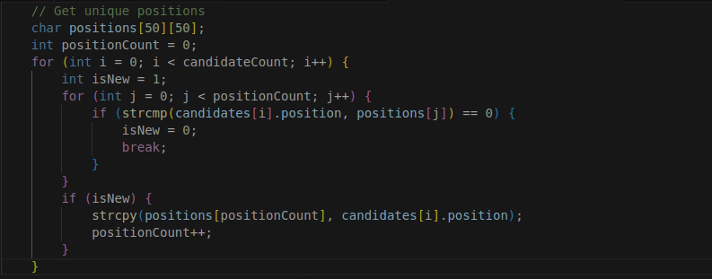
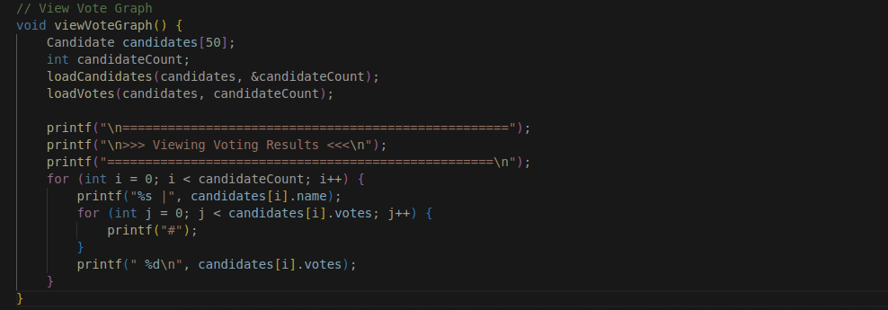

Table of Contents
How I Accidentally Built a Voting System in C

Jabulani Kapherachoka
10 April, 2025

So here is the story: It was that time of the semester when we were required to present our project ideas. I had absolutely no clue what i was going to build — brain blank, zero inspiration. And then ... When it was time to announce the project idea i just blurted out, "I'll build a voting system". Hell nah. Did I just say that? But hey, thats how my very first voting system project was born — unexpectedly we might say LOL!
Why C for the system?
I know some programmers out there had this question. At the time, we were learning C programming language, so naturally, I was just supposed to do so. (But yeah, I plan on recreating it in C++ soon).
What it does
The system has two main users: the admin and the voter.
Here are the key functions of the system:
1. Admin first :
Regester candidates to the system.
To register candiate the system takes input 3 inputs
- Candidate Full name
- Candidate ID number
- Candidate Position
Regester voter to the system.
For voter registration voter is asked to provide:
- Voters Full name
- Voters ID number
View the results of the voting.
On this part I really hard to dig deep. I had no idea on how i was going to show the results on the terminal. So i googled way how i can present info on the terminal, and i came across ASCII graphics.
2. Voter :
The voters platform is as simple as entering your voterID, waiting for the system to verify if your registred into the system. It checks the regFiles for the matching ID.
Behind the scenes
I started by sketching out the flow diagrams to plan every stage of the voting process. There are two main portals in the system: Voter Portal and the Admin Portal, where one needs a secret code to enter the admin portal.
All the data — candidates, voters, votes and used voterID's are stored in .txt files. I wanted keep things simple, light and offline.
One unique part: While building the voting system, one important feature I needed was to group candidates based on the position they’re contesting for. Sounds simple, right? But since candidates were being registered one by one into a flat file (without any structure like a database), I had to figure out a way to dynamically detect which positions existed and group candidates accordingly — all with just arrays and logic in C.
So I created a mechanism to scan through all registered candidates, identify each unique position, and store it in a list. That way, when it came time to display candidates during the voting phase, I could easily show all candidates under the same position grouped together.
And for the results? I built a basic ASCII graph using loops and # symbols to visualise vote counts per candidate. Here is a peek of the code.
Security & Admin Access
Security was a big deal for me. Here's how it works:
- Users can only vote once. The system tracks their ID and marks it as used after voting. To access admin features, a secret code must be entered. The admin can view the results and manage candidates and voters, but they can't edit data (to prevent internal corruption). Exiting admin mode also requires another code, just to make it more security spice.
Growth from the Grind
Challenges? So many, but here are a few noticable ones :
Grouping candidates by position — Building a vote counter that visually shows results — Creating a secure, two layer access system — And oh debugging, LOTS OF IT.
I had to read through so much C documentations just to get certain things right. But in the process, I improved drastically in file handling, loops, and especially string manipulation using the #include <string.h> library. Overall working on this project taught me — How to organize C programs into modular functions. The power of structures and advanced loops. Most importantly, how to think like a developer not just a coder.
What's Next?
I might have taken a brake from it for a moment, but am not done with it yet. I'm planning to:
- — add a database support
- — Introduce aunthentication systems
- — most importantly Build a GUI version
I was also thinking of open-sourcing it, so that other devs and students can learn from it, improve it or even build their own.
Final Thoughts
This whole thing started as an slip of the tongue. But I ended up learning so much, not just about C programming, but about problem-solving, security and building something that actually works.
So yeah... Sometimes the best projects start with I might say a: "Wait... did I just say that?